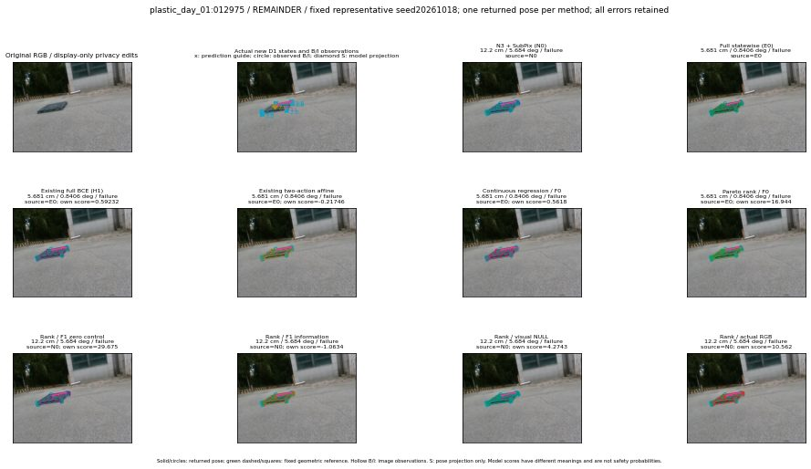

실선은 반환 자세, 초록 점선은 고정 기하 참조입니다. S는 영상 관측이 아닙니다. 점수는 모델별 의미가 다르며 보정된 안전 확률이 아닙니다. 개인정보 처리는 표시 사본에만 적용했습니다.
| 방법·seed | 위치 / 회전 / 공동성공 | 실제 출처 | 선택 후보 | 각 모델 자체 점수 |
|---|---|---|---|---|
| N0 | 12.2 cm / 5.684 deg / failure | N0 | N/A | N/A |
| E0 | 5.681 cm / 0.8406 deg / failure | E0 | N/A | N/A |
| E0_REGENERATED | 5.681 cm / 0.8406 deg / failure | E0 | E0_REGENERATED | N/A |
| POSEFIX_SUBPIX_PF_ANCHOR | 11.5 cm / 5.714 deg / failure | OTHER | N/A | N/A |
| POSEFIX_SUBPIX_YOLO_ANCHOR | 11.5 cm / 5.714 deg / failure | OTHER | N/A | N/A |
| D1_H1_MLP_s20261018 | 5.681 cm / 0.8406 deg / failure | E0 | E0_REGENERATED | 0.5923203229904175 |
| D1_H1_MLP_s20261019 | 5.681 cm / 0.8406 deg / failure | E0 | E0_REGENERATED | 0.22739626467227936 |
| D1_H1_MLP_s20261020 | 5.681 cm / 0.8406 deg / failure | E0 | E0_REGENERATED | 0.1406945288181305 |
| D1_H1_PAIR_MLP_s20261018 | 5.681 cm / 0.8406 deg / failure | E0 | E0_REGENERATED | -1.1836721897125244 |
| D1_H1_PAIR_MLP_s20261019 | 5.681 cm / 0.8406 deg / failure | E0 | E0_REGENERATED | -1.445878028869629 |
| D1_H1_PAIR_MLP_s20261020 | 5.681 cm / 0.8406 deg / failure | E0 | E0_REGENERATED | -1.365944743156433 |
| D1_H1_PAIR_ROLE_AFFINE_s20261018 | 5.681 cm / 0.8406 deg / failure | E0 | E0_REGENERATED | -0.21745513379573822 |
| D1_H1_PAIR_ROLE_AFFINE_s20261019 | 5.681 cm / 0.8406 deg / failure | E0 | E0_REGENERATED | -0.5925797820091248 |
| D1_H1_PAIR_ROLE_AFFINE_s20261020 | 12.2 cm / 5.684 deg / failure | N0 | N0 | -0.6443667411804199 |
| R_CONT_F0_s20261018 | 5.681 cm / 0.8406 deg / failure | E0 | E0_REGENERATED | 0.561799168586731 |
| R_CONT_F0_s20261019 | 5.681 cm / 0.8406 deg / failure | E0 | E0_REGENERATED | 0.5533229112625122 |
| R_CONT_F0_s20261020 | 5.681 cm / 0.8406 deg / failure | E0 | E0_REGENERATED | 0.5253114700317383 |
| R_ORDER_F0_s20261018 | 5.681 cm / 0.8406 deg / failure | E0 | E0_REGENERATED | 16.94449234008789 |
| R_ORDER_F0_s20261019 | 5.681 cm / 0.8406 deg / failure | E0 | E0_REGENERATED | 15.837950706481934 |
| R_ORDER_F0_s20261020 | 5.681 cm / 0.8406 deg / failure | E0 | E0_REGENERATED | 2.3275034427642822 |
| R_ORDER_F1_ZERO_s20261018 | 12.2 cm / 5.684 deg / failure | N0 | N0 | 29.674680709838867 |
| R_ORDER_F1_ZERO_s20261019 | 5.681 cm / 0.8406 deg / failure | E0 | E0_REGENERATED | 39.199886322021484 |
| R_ORDER_F1_ZERO_s20261020 | 5.681 cm / 0.8406 deg / failure | E0 | E0_REGENERATED | 16.67865753173828 |
| R_ORDER_F1_s20261018 | 12.2 cm / 5.684 deg / failure | N0 | N0 | -1.0633525848388672 |
| R_ORDER_F1_s20261019 | 5.681 cm / 0.8406 deg / failure | E0 | E0_REGENERATED | 7.807245254516602 |
| R_ORDER_F1_s20261020 | 12.2 cm / 5.684 deg / failure | N0 | N0 | 2.5877959728240967 |
| V_ORDER_NULL_s20261018 | 12.2 cm / 5.684 deg / failure | N0 | N0 | 4.2743144035339355 |
| V_ORDER_NULL_s20261019 | 5.681 cm / 0.8406 deg / failure | E0 | E0_REGENERATED | 2.992011308670044 |
| V_ORDER_NULL_s20261020 | 5.681 cm / 0.8406 deg / failure | E0 | E0_REGENERATED | 6.029249668121338 |
| V_ORDER_RGB_s20261018 | 12.2 cm / 5.684 deg / failure | N0 | N0 | 10.562296867370605 |
| V_ORDER_RGB_s20261019 | 5.681 cm / 0.8406 deg / failure | E0 | E0_REGENERATED | 2.9983901977539062 |
| V_ORDER_RGB_s20261020 | 12.2 cm / 5.684 deg / failure | N0 | N0 | -5.322698593139648 |